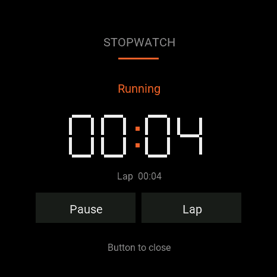
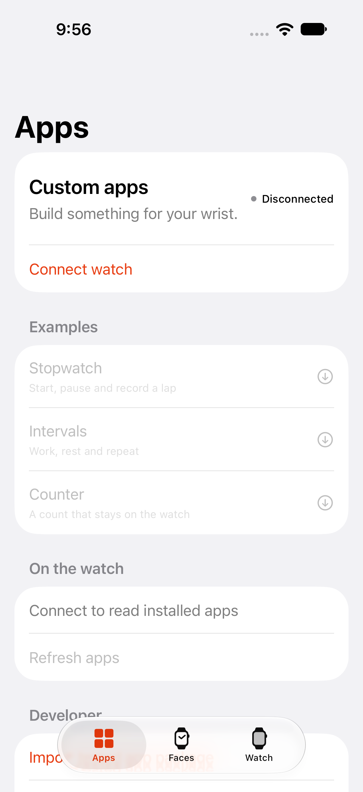
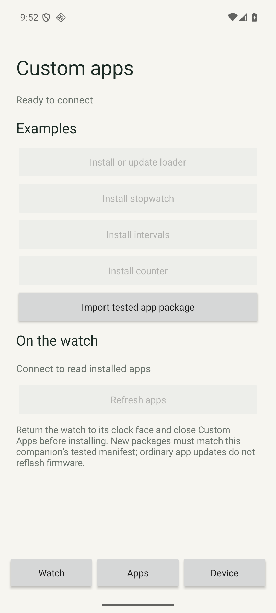
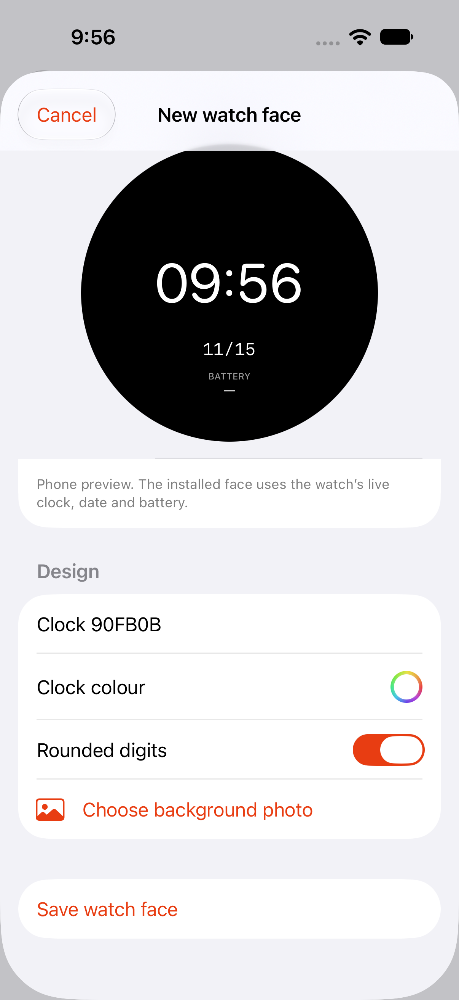
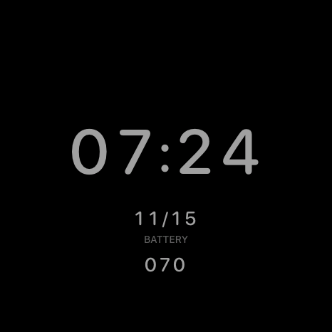

WATCH PRO 2 · OPEN SOURCE
Make room
for your apps.
A native Rust SDK and app loader for the CMF Watch Pro 2. Start with the base companion, add your own features, and install apps into independent slots.
JX402 / D398 · Stock 1.0.0.73
Other watch models and firmware versions are unsupported.

01 / THE EXAMPLES
Three apps. One SDK.
Drawing, touch, crown input, messages and atomic storage are available to every app.
CONTROL PREVIEW
Time without a phone.
Start or pause, record a lap, then reset while paused.
These controls run in your browser. They demonstrate interaction, not the ARM runtime or a Bluetooth connection.
02 / THE BASE COMPANIONS
A starting point
for your own project.
Pair a watch, read device status, manage reviewed app packages and add the screens your app needs.


Use the working connection.
Protocol code lives separately from the screens. Extend the companion with your own controls and exchange app-defined messages with the watch.
Package installs check the tested manifest and require confirmation from the watch.
Android APK ↗Build iOS or Android ↗Simulator captures. This base revision and Android physical BLE behavior await hardware validation.
03 / YOUR WATCH FACE
Put your own face on it.
Choose a photo, clock colour and digits. Save, share or install through the stock face manager, with no new firmware flash.


A live home-screen face.
The clock, date and battery come from the watch. A separate dim clock supports always-on display.
Installation requires a free face slot; existing faces are never removed automatically.
Create & install a face ↗Production Swift upload and natural clock updates verified in the ARM emulator. Physical face installation is pending.
04 / BUILD SOMETHING ELSE
Start with a small app.
Keep building.
Fork an example, add its crate to the workspace, test input and lifecycle behavior, then package it as .wp2app. Eight independent slots keep ordinary app updates separate from the first stock firmware patch.
First-time firmware patching can make a watch unusable. Physical recovery is not universally verified. Native apps are not a security sandbox; review code before installing it.